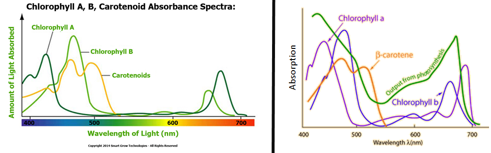
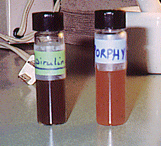

Pigments are chemical compounds which reflect only certain wavelengths of visible light. This makes them appear "colorful". Flowers, corals, and even animal skin contain pigments which give them their colors. More important than their reflection of light is the ability of pigments to absorb certain wavelengths.
Because they interact with light to absorb only certain wavelengths, pigments are useful to plants and other autotrophs --organisms which make their own food using photosynthesis. In plants, algae, and cyanobacteria, pigments are the means by which the energy of sunlight is captured for photosynthesis. However, since each pigment reacts with only a narrow range of the spectrum, there is usually a need to produce several kinds of pigments, each of a different color, to capture more of the sun's energy.

There are three types of pigments:
1)Chlorophylls:
Chlorophylls are greenish pigments which rae most important and active pigments of photosynthesis. They are insoluble in water but soluble in in-organic solvents. There are seven different types of chlorophylls, they are chlorophyll a,b,c,d,e, bacteriochlorophyll and bacteriovirdin. Chlorophyll-a is the molecule which makes photosynthesis possible, by passing its energized electrons on to molecules which will manufacture sugars. All plants, algae, and cyanobacteria which photosynthesize contain chlorophyll "a". A second kind of chlorophyll is chlorophyll "b", which occurs only in "green algae" and in the plants. Chlorophyll c,d and e are found in brown and red algae along with chlorophyll a.
2)Carotenoids:
Carotenoids are usually red, orange, or yellow pigments, and include the familiar compound carotene, which gives carrots their color. These compounds are composed of two small six-carbon rings connected by a "chain" of carbon atoms. As a result, they do not dissolve in water, and must be attached to membranes within the cell. Carotenoids cannot transfer sunlight energy directly to the photosynthetic pathway, but must pass their absorbed energy to chlorophyll. For this reason, they are called accessory pigments. There are two main types of carotenoids viz. carotenes and xanthophylls.Carotenes are hydrocarbons with empirical formula C40H56. Beta-carotene is the major carotene found in plants. Xanthophylls are oxygenated hydrocarbons with empirical formula C40H56O2. Lutein is the major xanthophyll present in plants.
3)Phycobilins:

Phycobilins are water-soluble pigments, and are therefore found in the cytoplasm, or in the stroma of the chloroplast. They occur only in Cyanobacteria and Rhodophyta.
The picture at the right shows the two classes of phycobilins which may be extracted from these "algae". The vial on the left contains the bluish pigment phycocyanin, which gives the Cyanobacteria their name. The vial on the right contains the reddish pigment phycoerythrin, which gives the red algae their common name.
Did you know?
Anthocyanins are purple coloured pigments. These pigments contain Cu and are stored in the vacuole of a plant because they unlike the other fat soluble pigments are water soluble. They are also found in flowers. They are not photosynthetic.
Dual nature of light:
Light has a dual nature. During propagation it behaves as a wave form and on interaction with matter it behaves as a stream of discrete packetof energy known as photons. The amount of energy in photon is called quantum. The pigments absorb energy of photon. The visible light is only a small part of spectrum ranging from 360nm(violet region) to 760nm(red region). This portion is known as photosynthetically active radiation(PAR). The highest rate of photosynthesis is in the red and blue regions.
Role of pigments:
Chlorophyll-a is the only pigment that can absorb and convert light energy into chemical energy. Hence it is known as reaction center.To know about photoexcitation of chlorophyll a, watch this video:
Chlorophyll b and carotenoids mabsorb light energy of different wavelengths and transfer it to chlorophyll a. They broaden the spectrum of light absorbed and help in absorbinglight energy more efficiently, hence they are called accessory pigments.
Photosystem 1 & 2:
The accessory pigments and reaction centre together form photo system. Each photosystem can be identified by the wavelength of light to which it is most reactive (700 and 680 nanometers, respectively for PSI and PSII in chloroplasts), the amount and type of light-harvesting complexes present and the type of terminal electron acceptor used.